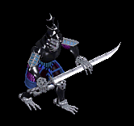
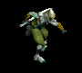
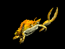
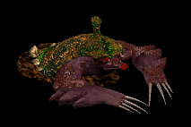
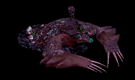
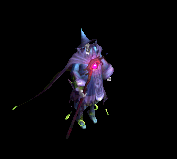
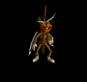
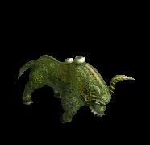

指 をドロップするmob一覧
一覧ページへ
| 巨人骸骨 | アンデット | 一般2 | |||||||
|---|---|---|---|---|---|---|---|---|---|
|  | 鈍器(380) | 牙(250) | 矢(380) | 職業鎧(210) | 指輪(190) | 能力向上1(150) | 双剣(250) | 魔弾(380) | |
| ヴァンパイア | アンデット | 一般3 | |||||||
 | 鞭(360) | 牙(240) | イベント(360) | 職業鎧(200) | 指輪(180) | 特殊1(140) | 双剣(240) | ||
| 上級ヴァンパイア | アンデット | セミ1 | |||||||
 | 鞭(390) | 笛(260) | イベント(390) | 職業鎧(220) | 指輪(200) | 特殊1(160) | |||
| 古代ヴァンパイア | アンデット | セミ2 | |||||||
 | 鞭(420) | 牙(280) | 弾(420) | 職業鎧(230) | 指輪(210) | 特殊1(170) | 双剣(280) | ||
| ドラキュラ | アンデット | ボス1 | |||||||
 | 鞭(470) | 笛(310) | CP回復(470) | 職業鎧(260) | 指輪(240) | 特殊1(190) | |||
| ノースフェラトゥ | アンデット | ボス2 | |||||||
 | 鞭(490) | 牙(330) | HP回復(490) | 職業鎧(270) | 指輪(250) | 特殊1(200) | 双剣(330) | ||
| シーフ | 人間 | 一般1 | |||||||
|  | 投擲(410) | ステッキ(270) | イベント(410) | 職業鎧(230) | 指輪(210) | 特殊1(160) | |||
| コロッサス | 人間 | ボス1 | |||||||
 | 鈍器(470) | 牙(310) | HP回復(470) | 足(260) | 指輪(240) | 能力向上1(190) | 双剣(310) | ||
| エルフ戦士 | 人間 | 一般3 | |||||||
 | 片手剣(360) | 弓(240) | 矢(360) | 鎧(200) | 指輪(180) | 腕刺青(120) | クロー(360) | 銃(240) | 魔弾(360) |
| エルフ暗殺者 | 人間 | 一般4 | |||||||
 | 片手剣(300) | 投擲(200) | 盾(300) | 兜・帽子(170) | 指輪(150) | 腕刺青(130) | クロー(300) | ||
| エルフ巡察者 | 人間 | セミ1 | |||||||
 | 片手剣(390) | 弓(260) | 矢(390) | 兜・帽子(220) | 指輪(200) | 腕刺青(140) | クロー(390) | 銃(260) | 魔弾(390) |
| エルフ騎士 | 人間 | セミ2 | |||||||
 | 片手剣(420) | 槍(280) | 盾(420) | 鎧(230) | 指輪(210) | 腕刺青(150) | クロー(420) | 箒(280) | |
| エルフ王 | 人間 | ボス3 | |||||||
 | 片手剣(510) | 弓(340) | 矢(510) | 鎧(280) | 指輪(260) | 腕刺青(160) | クロー(510) | 銃(340) | 魔弾(510) |
| ラットマン | 悪魔 | 一般1 | |||||||
 | 投擲(410) | 笛(270) | 弾(410) | 足(230) | 指輪(210) | 帰還(160) | |||
| ピエンド | 悪魔 | 一般1 | |||||||
 | 鞭(410) | 杖(270) | 状態異常回復1(410) | 腰(230) | 指輪(210) | 十字架(180) | 本(270) | ||
| レッサーデーモン | 悪魔 | 一般2 | |||||||
 | 鞭(380) | 牙(250) | 矢(380) | マント(210) | 指輪(190) | 十字架(190) | 双剣(250) | 魔弾(380) | |
| デーモン | 悪魔 | セミ2 | |||||||
 | 鞭(420) | 杖(280) | CP回復(420) | 腰(230) | 指輪(210) | 十字架(200) | 本(280) | ||
| デビル | 悪魔 | セミ3 | |||||||
 | 鞭(450) | 牙(300) | 矢(450) | マント(250) | 指輪(230) | 十字架(210) | 双剣(300) | 魔弾(450) | |
| サタン | 悪魔 | ボス2 | |||||||
 | 鞭(490) | 杖(330) | 状態異常回復1(490) | 腰(270) | 指輪(250) | 十字架(220) | 本(330) | ||
| ウェアーゴート | 悪魔 | 一般3 | |||||||
 | 鞭(360) | 翼(240) | 鍵(20) | グローブ(200) | 指輪(180) | 宝石(140) | 水晶(240) | ||
| ビッグクラブ | 動物 | 一般2 | |||||||
 | 投擲(380) | 両手剣(250) | 状態異常回復1(380) | 足(210) | 指輪(190) | 能力向上2(150) | 鎌(250) | ||
| キングクラブ | 動物 | セミ1 | |||||||
|  | 投擲(390) | 両手剣(260) | 状態異常回復1(390) | 足(220) | 指輪(200) | 帰還(160) | 鎌(260) | ||
| 大型モグラ | 動物 | 一般3 | |||||||
|  | 両手剣(360) | ステッキ(240) | 弾(360) | 職業鎧(200) | 指輪(180) | 能力向上1(140) | 鎌(360) | ||
| 巨大モグラ | 動物 | 一般4 | |||||||
 | 鞭(300) | 杖(200) | 状態異常回復2(80) | グローブ(170) | 指輪(150) | 能力向上1(120) | 本(200) | ||
| ディガー | 動物 | セミ1 | |||||||
|  | 弓(390) | スリング(260) | 弾(390) | 職業鎧(220) | 指輪(200) | 能力向上1(160) | 銃(390) | ||
| マインスィーパ | 動物 | セミ2 | |||||||
 | 鞭(420) | 杖(280) | 弾(420) | グローブ(230) | 指輪(210) | 能力向上1(170) | 本(280) | ||
| ロードブローカー | 動物 | ボス1 | |||||||
 | 笛(470) | ステッキ(310) | 弾(470) | 職業鎧(260) | 指輪(240) | 能力向上1(190) | |||
| 巨人骸骨Ex | アンデット | 一般2 | |||||||
| 鈍器(380) | 牙(250) | 矢(380) | 職業鎧(210) | 指輪(190) | 能力向上1(150) | 双剣(250) | 魔弾(380) | ||
| ヴァンパイアEx | アンデット | 一般3 | |||||||
| 鞭(360) | 牙(240) | イベント(360) | 職業鎧(200) | 指輪(180) | ブローチ(200) | 双剣(240) | ||
| 上級ヴァンパイアEx | アンデット | セミ1 | |||||||
| 鞭(450) | 笛(300) | イベント(450) | 職業鎧(250) | 指輪(230) | ブローチ(250) | |||
| 古代ヴァンパイアEx | アンデット | セミ2 | |||||||
| 鞭(650) | 牙(430) | 弾(650) | 職業鎧(360) | 指輪(330) | ブローチ(300) | 双剣(430) | ||
| ドラキュラEx | アンデット | ボス1 | |||||||
| 鞭(1200) | 笛(800) | CP回復(1200) | 職業鎧(670) | 指輪(600) | ブローチ(400) | |||
| ノースフェラトゥEx | アンデット | ボス2 | |||||||
| 鞭(2000) | 牙(1330) | HP回復(2000) | 職業鎧(1110) | 指輪(1000) | ブローチ(500) | 双剣(1330) | ||
| シーフEx | 人間 | 一般1 | |||||||
| 投擲(410) | ステッキ(270) | イベント(410) | 職業鎧(230) | 指輪(210) | 特殊1(160) | ||||
| コロッサスEx | 人間 | ボス1 | |||||||
| 鈍器(1200) | 牙(800) | HP回復(1200) | 足(670) | 指輪(600) | 能力向上1(480) | 双剣(800) | ||
| エルフ戦士Ex | 人間 | 一般3 | |||||||
| 片手剣(360) | 弓(240) | 矢(360) | 鎧(200) | 指輪(180) | 腕刺青(120) | クロー(360) | 銃(240) | 魔弾(360) |
| エルフ暗殺者Ex | 人間 | 一般4 | |||||||
| 片手剣(300) | 投擲(200) | 盾(300) | 兜・帽子(170) | 指輪(150) | 腕刺青(130) | クロー(300) | ||
| エルフ巡察者Ex | 人間 | セミ1 | |||||||
| 片手剣(450) | 弓(300) | 矢(450) | 兜・帽子(250) | 指輪(230) | 腕刺青(140) | クロー(450) | 銃(300) | 魔弾(450) |
| エルフ騎士Ex | 人間 | セミ2 | |||||||
| 片手剣(650) | 槍(430) | 盾(650) | 鎧(360) | 指輪(330) | 腕刺青(150) | クロー(650) | 箒(430) | |
| エルフ王Ex | 人間 | ボス3 | |||||||
| 片手剣(2800) | 弓(1870) | 矢(2800) | 鎧(1560) | 指輪(1400) | 腕刺青(160) | クロー(2800) | 銃(1870) | 魔弾(2800) |
| ラットマンEx | 悪魔 | 一般1 | |||||||
| 投擲(410) | 笛(270) | 弾(410) | 足(230) | 指輪(210) | 帰還(160) | |||
| ピエンドEx | 悪魔 | 一般1 | |||||||
| 鞭(410) | 杖(270) | 状態異常回復1(410) | 腰(230) | 指輪(210) | 十字架(180) | 本(270) | ||
| レッサーデーモンEx | 悪魔 | 一般2 | |||||||
| 鞭(380) | 牙(250) | 矢(380) | マント(210) | 指輪(190) | 十字架(190) | 双剣(250) | 魔弾(380) | |
| デーモンEx | 悪魔 | セミ2 | |||||||
| 鞭(650) | 杖(430) | CP回復(650) | 腰(360) | 指輪(330) | 十字架(200) | 本(430) | ||
| デビルEx | 悪魔 | セミ3 | |||||||
| 鞭(800) | 牙(530) | 矢(800) | マント(440) | 指輪(400) | 十字架(210) | 双剣(530) | 魔弾(800) | |
| サタンEx | 悪魔 | ボス2 | |||||||
| 鞭(2000) | 杖(1330) | 状態異常回復1(2000) | 腰(1110) | 指輪(1000) | 十字架(220) | 本(1330) | ||
| ウェアーゴートEx | 悪魔 | 一般3 | |||||||
| 鞭(360) | 翼(240) | 鍵(40) | グローブ(200) | 指輪(180) | 宝石(140) | 水晶(240) | ||
| ビッグクラブEx | 動物 | 一般2 | |||||||
| 投擲(380) | 両手剣(250) | 状態異常回復1(380) | 足(210) | 指輪(190) | 能力向上2(150) | 鎌(250) | ||
| キングクラブEx | 動物 | セミ1 | |||||||
| 投擲(450) | 両手剣(300) | 状態異常回復1(450) | 足(250) | 指輪(230) | 帰還(180) | 鎌(300) | |||
| 大型モグラEx | 動物 | 一般3 | |||||||
| 両手剣(360) | ステッキ(240) | 弾(360) | 職業鎧(200) | 指輪(180) | 能力向上1(140) | 鎌(360) | |||
| 巨大モグラEx | 動物 | 一般4 | |||||||
| 鞭(300) | 杖(200) | 状態異常回復2(80) | グローブ(170) | 指輪(150) | 能力向上1(120) | 本(200) | ||
| ディガーEx | 動物 | セミ1 | |||||||
| 弓(450) | スリング(300) | 弾(450) | 職業鎧(250) | 指輪(230) | 能力向上1(180) | 銃(450) | |||
| マインスィーパEx | 動物 | セミ2 | |||||||
| 鞭(650) | 杖(430) | 弾(650) | グローブ(360) | 指輪(330) | 能力向上1(260) | 本(430) | ||
| ロードブローカーEx | 動物 | ボス1 | |||||||
| 笛(1200) | ステッキ(800) | 弾(1200) | 職業鎧(670) | 指輪(600) | 能力向上1(480) | |||
| トランクマンEx | 神獣 | 一般3 | |||||||
 | 杖(360) | 鞭(240) | イベント(360) | 腰(200) | 指輪(180) | 能力向上1(140) | 本(360) | ||
| ディムジェスターEx | 神獣 | 一般2 | |||||||
 | 笛(380) | 翼(250) | 盾(380) | 兜・帽子(210) | 指輪(190) | 特殊1(150) | 水晶(250) | ||
| リプリートマーキEx | 神獣 | 一般4 | |||||||
 | 投擲(300) | 弓(200) | 盾(300) | マント(170) | 指輪(150) | 特殊1(120) | 銃(200) | ||
| ダークファイアEx | 神獣 | ボス1 | |||||||
 | 槍(1200) | 翼(800) | HP回復(1200) | 職業鎧(670) | 指輪(600) | 特殊1(480) | 箒(1200) | 水晶(800) | |
| グリムジョーカーEx | 神獣 | 一般1 | |||||||
 | 槍(410) | 鞭(270) | 盾(410) | 鎧(230) | 指輪(210) | 特殊1(160) | 箒(410) | ||
| ボイドラスターEx | 神獣 | 一般3 | |||||||
 | 笛(360) | ステッキ(240) | 盾(360) | マント(200) | 指輪(180) | 特殊1(140) | |||
| ウィルオウィスプEx | 神獣 | セミ1 | |||||||
 | 投擲(450) | 弓(300) | 盾(450) | 腰(250) | 指輪(230) | 特殊1(180) | 銃(300) | ||
| 巨人骸骨Zin | アンデット | 一般2 | |||||||
| 鈍器(1380) | 牙(920) | 矢(1380) | 職業鎧(770) | 指輪(690) | 能力向上1(550) | 双剣(920) | 魔弾(1380) | ||
| ヴァンパイアZin | アンデット | 一般3 | |||||||
| 鞭(1560) | 牙(1040) | イベント(1560) | 職業鎧(870) | 指輪(780) | ブローチ(200) | 双剣(1040) | ||
| 上級ヴァンパイアZin | アンデット | セミ1 | |||||||
| 鞭(650) | 笛(430) | イベント(650) | 職業鎧(360) | 指輪(330) | ブローチ(250) | |||
| 古代ヴァンパイアZin | アンデット | セミ2 | |||||||
| 鞭(750) | 牙(500) | 弾(750) | 職業鎧(420) | 指輪(380) | ブローチ(300) | 双剣(500) | ||
| ドラキュラZin | アンデット | ボス1 | |||||||
| 鞭(1000) | 笛(670) | CP回復(1000) | 職業鎧(560) | 指輪(500) | ブローチ(400) | |||
| ノースフェラトゥZin | アンデット | ボス2 | |||||||
| 鞭(1100) | 牙(730) | HP回復(1100) | 職業鎧(610) | 指輪(550) | ブローチ(500) | 双剣(730) | ||
| シーフZin | 人間 | 一般1 | |||||||
| 投擲(1210) | ステッキ(810) | イベント(1210) | 職業鎧(670) | 指輪(610) | 特殊1(480) | ||||
| コロッサスZin | 人間 | ボス1 | |||||||
| 鈍器(1000) | 牙(670) | HP回復(1000) | 足(560) | 指輪(500) | 能力向上1(400) | 双剣(670) | ||
| エルフ戦士Zin | 人間 | 一般3 | |||||||
| 片手剣(1560) | 弓(1040) | 矢(1560) | 鎧(870) | 指輪(780) | 腕刺青(120) | クロー(1560) | 銃(1040) | 魔弾(1560) |
| エルフ暗殺者Zin | 人間 | 一般4 | |||||||
| 片手剣(1200) | 投擲(800) | 盾(1200) | 兜・帽子(670) | 指輪(600) | 腕刺青(130) | クロー(1200) | ||
| エルフ巡察者Zin | 人間 | セミ1 | |||||||
| 片手剣(650) | 弓(430) | 矢(650) | 兜・帽子(360) | 指輪(330) | 腕刺青(140) | クロー(650) | 銃(430) | 魔弾(650) |
| エルフ騎士Zin | 人間 | セミ2 | |||||||
| 片手剣(750) | 槍(500) | 盾(750) | 鎧(420) | 指輪(380) | 腕刺青(150) | クロー(750) | 箒(500) | |
| エルフ王Zin | 人間 | ボス3 | |||||||
| 片手剣(1200) | 弓(800) | 矢(1200) | 鎧(670) | 指輪(600) | 腕刺青(160) | クロー(1200) | 銃(800) | 魔弾(1200) |
| ラットマンZin | 悪魔 | 一般1 | |||||||
| 投擲(1210) | 笛(810) | 弾(1210) | 足(670) | 指輪(610) | 帰還(480) | |||
| ピエンドZin | 悪魔 | 一般1 | |||||||
| 鞭(1210) | 杖(810) | 状態異常回復1(1210) | 腰(670) | 指輪(610) | 十字架(180) | 本(810) | ||
| レッサーデーモンZin | 悪魔 | 一般2 | |||||||
| 鞭(1380) | 牙(920) | 矢(1380) | マント(770) | 指輪(690) | 十字架(190) | 双剣(920) | 魔弾(1380) | |
| デーモンZin | 悪魔 | セミ2 | |||||||
| 鞭(750) | 杖(500) | CP回復(750) | 腰(420) | 指輪(380) | 十字架(200) | 本(500) | ||
| デビルZin | 悪魔 | セミ3 | |||||||
| 鞭(900) | 牙(600) | 矢(900) | マント(500) | 指輪(450) | 十字架(210) | 双剣(600) | 魔弾(900) | |
| サタンZin | 悪魔 | ボス2 | |||||||
| 鞭(1100) | 杖(730) | 状態異常回復1(1100) | 腰(610) | 指輪(550) | 十字架(220) | 本(730) | ||
| ウェアーゴートZin | 悪魔 | 一般3 | |||||||
| 鞭(1560) | 翼(1040) | 鍵(1560) | グローブ(870) | 指輪(780) | 宝石(620) | 水晶(1040) | ||
| ビッグクラブZin | 動物 | 一般2 | |||||||
| 投擲(1380) | 両手剣(920) | 状態異常回復1(1380) | 足(770) | 指輪(690) | 能力向上2(550) | 鎌(920) | ||
| キングクラブZin | 動物 | セミ1 | |||||||
| 投擲(650) | 両手剣(430) | 状態異常回復1(650) | 足(360) | 指輪(330) | 帰還(260) | 鎌(430) | |||
| 大型モグラZin | 動物 | 一般3 | |||||||
| 両手剣(1560) | ステッキ(1040) | 弾(1560) | 職業鎧(870) | 指輪(780) | 能力向上1(620) | 鎌(1560) | |||
| 巨大モグラZin | 動物 | 一般4 | |||||||
| 鞭(1200) | 杖(800) | 状態異常回復2(300) | グローブ(670) | 指輪(600) | 能力向上1(480) | 本(800) | ||
| ディガーZin | 動物 | セミ1 | |||||||
| 弓(650) | スリング(430) | 弾(650) | 職業鎧(360) | 指輪(330) | 能力向上1(260) | 銃(650) | |||
| マインスィーパZin | 動物 | セミ2 | |||||||
| 鞭(750) | 杖(500) | 弾(750) | グローブ(420) | 指輪(380) | 能力向上1(300) | 本(500) | ||
| ロードブローカーZin | 動物 | ボス1 | |||||||
| 笛(1000) | ステッキ(670) | 弾(1000) | 職業鎧(560) | 指輪(500) | 能力向上1(400) | |||
| トランクマンZin | 神獣 | 一般3 | |||||||
| 杖(1560) | 鞭(1040) | イベント(1560) | 腰(870) | 指輪(780) | 能力向上1(620) | 本(1560) | ||
| ディムジェスターZin | 神獣 | 一般2 | |||||||
| 笛(1380) | 翼(920) | 盾(1380) | 兜・帽子(770) | 指輪(690) | 特殊1(550) | 水晶(920) | ||
| リプリートマーキZin | 神獣 | 一般4 | |||||||
| 投擲(1200) | 弓(800) | 盾(1200) | マント(670) | 指輪(600) | 特殊1(480) | 銃(800) | ||
| ダークファイアZin | 神獣 | ボス1 | |||||||
| 槍(1000) | 翼(670) | HP回復(1000) | 職業鎧(560) | 指輪(500) | 特殊1(400) | 箒(1000) | 水晶(670) | |
| グリムジョーカーZin | 神獣 | 一般1 | |||||||
| 槍(1210) | 鞭(810) | 盾(1210) | 鎧(670) | 指輪(610) | 特殊1(480) | 箒(1210) | ||
| ボイドラスターZin | 神獣 | 一般3 | |||||||
| 笛(1560) | ステッキ(1040) | 盾(1560) | マント(870) | 指輪(780) | 特殊1(620) | |||
| ウィルオウィスプZin | 神獣 | セミ1 | |||||||
| 投擲(650) | 弓(430) | 盾(650) | 腰(360) | 指輪(330) | 特殊1(260) | 銃(430) | ||
 | 弓(1560) | 片手剣(1040) | 矢(1560) | グローブ(900) | 手首(780) | 腕刺青(170) | クロー(1040) | 銃(1560) | 魔弾(1560) |
| アンデッド魔法師1 Zin | アンデット | 一般4 | |||||||
 | 指輪(30) | マント(50) | 杖(90) | 能力向上1(130) | 矢(170) | グローブ(200) | 本(90) | 魔弾(170) | 魔弾(170) |
| アンデッド魔法師4 Zin | アンデット | ボス1 | |||||||
 | 指輪(150) | 状態異常回復2(250) | 弾(450) | 手首(650) | 矢(850) | グローブ(1000) | 魔弾(850) | ||
| アンデッドライト Zin | アンデット | 一般4 | |||||||
 | 指輪(30) | マント(50) | 弾(90) | 手首(130) | 状態異常回復1(170) | 宝石(200) | |||
| アンデッドライト2 Zin | アンデット | セミ2 | |||||||
 | 指輪(80) | マント(140) | 弾(250) | 手首(360) | 矢(470) | グローブ(550) | 魔弾(470) | ||
| アンデッドライト4 Zin | アンデット | ボス2 | |||||||
 | 指輪(270) | マント(450) | 弾(810) | 手首(1170) | 矢(1530) | グローブ(1800) | 魔弾(1530) | ||
| アンデッドメイジ Zin | アンデット | 一般4 | |||||||
|  | 指輪(30) | マント(50) | 弾(90) | 手首(130) | 矢(170) | HP回復(200) | 魔弾(170) | ||
| アンデッドメイジ1 Zin | アンデット | セミ2 | |||||||
 | 指輪(80) | マント(140) | 腕刺青(250) | 十字架(360) | 状態異常回復1(470) | 宝石(550) | |||
| アンデッドメイジ4 Zin | アンデット | ボス3 | |||||||
 | 指輪(360) | マント(600) | 弾(1080) | 手首(1560) | 肩刺青(2040) | グローブ(2400) | |||
| アンデッドロック1 Zin | アンデット | セミ1 | |||||||
 | 指輪(50) | マント(90) | 帰還(160) | 手首(230) | 矢(300) | グローブ(350) | 魔弾(300) | ||
| アンデッドロック2 Zin | アンデット | ボス1 | |||||||
 | 指輪(150) | マント(250) | 弾(450) | マント(650) | 状態異常回復1(850) | イベント(1000) | |||
| アンデッドロック4 Zin | アンデット | ボス3 | |||||||
 | 指輪(360) | マント(600) | 腕刺青(1080) | 手首(1560) | 矢(2040) | 杖(2400) | 本(2400) | 魔弾(2040) | |
| 古代悪魔 Zin | 悪魔 | 一般4 | |||||||
 | 指輪(130) | ブローチ(160) | 両手剣(70) | 十字架(40) | 弓(20) | 宝石(10) | 鎌(70) | 銃(20) | |
| 古代悪魔2 Zin | 悪魔 | セミ3 | |||||||
 | 指輪(460) | 首(560) | 帰還(230) | 手首(140) | 肩刺青(70) | CP回復(40) | |||
| 古代悪魔4 Zin | 悪魔 | ボス3 | |||||||
 | 指輪(1560) | 状態異常回復2(1920) | 両手剣(790) | 手首(480) | 状態異常回復1(240) | グローブ(120) | 鎌(790) | ||
| 死神 Zin | 悪魔 | 一般4 | |||||||
 | 指輪(130) | 首(160) | 両手剣(70) | 手首(40) | 弓(20) | グローブ(10) | 鎌(70) | 銃(20) | |
| 死神1 Zin | 悪魔 | セミ1 | |||||||
 | 指輪(230) | ブローチ(280) | 十字架(120) | 十字架(70) | 状態異常回復1(40) | グローブ(20) | |||
| 死神4 Zin | 悪魔 | ボス3 | |||||||
 | 指輪(1560) | 首(1920) | 帰還(790) | 手首(480) | 弓(240) | HP回復(120) | 銃(240) | ||
| 邪臣1 Zin | 悪魔 | セミ2 | |||||||
 | 指輪(360) | 首(440) | 両手剣(180) | 能力向上1(110) | 状態異常回復1(60) | 杖(30) | 鎌(180) | 本(30) | |
| 邪臣3 Zin | 悪魔 | ボス2 | |||||||
 | 指輪(1170) | 職業鎧(1440) | 帰還(590) | 手首(360) | 杖(180) | イベント(90) | 本(180) | ||
| パンプキンヘッド Zin | 悪魔 | 一般4 | |||||||
 | 指輪(130) | 状態異常回復2(160) | 帰還(70) | 能力向上1(40) | 腰(20) | グローブ(10) | |||
| パンプキンヘッド1 Zin | 悪魔 | セミ1 | |||||||
 | 指輪(230) | 首(280) | マント(120) | 笛(70) | 状態異常回復1(40) | イベント(20) | |||
| パンプキンヘッド3 Zin | 悪魔 | ボス1 | |||||||
 | 指輪(650) | 弾(800) | 腕刺青(330) | 十字架(200) | 腰(100) | HP回復(50) | |||
| パンプキンヘッド4 Zin | 悪魔 | ボス2 | |||||||
 | 指輪(1170) | 首(1440) | 足(590) | 笛(360) | 腰(180) | グローブ(90) | |||
| ジャックランタン1 Zin | 悪魔 | セミ2 | |||||||
|  | 指輪(360) | ブローチ(440) | 腕刺青(180) | 笛(110) | 腰(60) | グローブ(30) | |||
| ジャックランタン2 Zin | 悪魔 | ボス1 | |||||||
 | 指輪(650) | 首(800) | 弾(330) | 能力向上1(200) | 肩刺青(100) | グローブ(50) | |||
| ジャックランタン4 Zin | 悪魔 | ボス3 | |||||||
 | 指輪(1560) | 弾(1920) | 足(790) | マント(480) | 腰(240) | グローブ(120) | |||
| エルダーパンプキン Zin | 悪魔 | セミ2 | |||||||
 | 指輪(360) | 首(440) | 弾(180) | 十字架(110) | 腰(60) | HP回復(30) | |||
| エルダーパンプキン2 Zin | 悪魔 | ボス1 | |||||||
 | 指輪(650) | 状態異常回復2(800) | 腕刺青(330) | 能力向上1(200) | 腰(100) | グローブ(50) | |||
| ダークバッファロ1 Zin | 神獣 | セミ1 | |||||||
 | 指輪(160) | ブローチ(230) | 弾(120) | 鞭(20) | 腕刺青(40) | 兜・帽子(90) | |||
| ダークバッファロ2 Zin | 神獣 | セミ2 | |||||||
 | 指輪(250) | 爪(360) | 腕刺青(190) | 鞭(30) | 腰(60) | HP回復(140) | |||
| ダークバッファロ3 Zin | 神獣 | ボス1 | |||||||
 | 指輪(450) | 爪(650) | 弾(350) | 十字架(50) | 肩刺青(100) | 兜・帽子(250) | |||
| ダークバッファロ4 Zin | 神獣 | ボス2 | |||||||
|  | 指輪(810) | ブローチ(1170) | 弾(630) | 鞭(90) | 腰(180) | 兜・帽子(450) | |||
| 赤パネルバッファ Zin | 神獣 | 一般4 | |||||||
 | 指輪(90) | 状態異常回復2(130) | 弾(70) | 鞭(10) | 肩刺青(20) | HP回復(50) | |||
| 赤パネルバッファ1 Zin | 神獣 | セミ2 | |||||||
 | 指輪(250) | 爪(360) | 弾(190) | 能力向上1(30) | 腰(60) | 兜・帽子(140) | |||
| 赤パネルバッファ3 Zin | 神獣 | ボス2 | |||||||
 | 指輪(810) | ブローチ(1170) | 弾(630) | 鞭(90) | 腰(180) | 兜・帽子(450) | |||
| 赤パネルバッファ4 Zin | 神獣 | ボス3 | |||||||
 | 指輪(1080) | 爪(1560) | 帰還(840) | 鞭(120) | 状態異常回復1(240) | 兜・帽子(600) | |||
| エメラルドバッファ Zin | 神獣 | セミ1 | |||||||
 | 指輪(160) | ブローチ(230) | 弾(120) | 鞭(20) | 腰(40) | 兜・帽子(90) | |||
| エメラルドバッファ1 Zin | 神獣 | セミ2 | |||||||
 | 指輪(250) | 爪(360) | 弾(190) | 十字架(30) | 能力向上2(60) | イベント(140) | |||
| エメラルドバッファ2 Zin | 神獣 | セミ3 | |||||||
 | 指輪(320) | 爪(460) | 弾(250) | 鞭(40) | 腰(70) | 兜・帽子(180) | |||
| エメラルドバッファ3 Zin | 神獣 | ボス2 | |||||||
 | 指輪(810) | 状態異常回復2(1170) | 帰還(630) | 鞭(90) | 腰(180) | 兜・帽子(450) | |||
| エメラルドバッファ4 Zin | 神獣 | ボス3 | |||||||
 | 指輪(1080) | 爪(1560) | 弾(840) | 鞭(120) | 腰(240) | HP回復(600) | |||
| 悪霊 Ex | 神獣 | 一般2 | |||||||
| 笛(380) | 翼(250) | 盾(380) | 兜・帽子(210) | 指輪(190) | 特殊1(150) | 水晶(250) | ||
| 呪われた悪霊 Ex | 神獣 | 一般4 | |||||||
| 投擲(300) | 弓(200) | 盾(300) | マント(170) | 指輪(150) | 特殊1(120) | 銃(200) | ||
| 黒い炎 Ex | 神獣 | ボス1 | |||||||
| 槍(1200) | 翼(800) | HP回復(1200) | 職業鎧(670) | 指輪(600) | 特殊1(480) | 箒(1200) | 水晶(800) | |
| ヴァンパイア | アンデット | 一般3 | |||||||
| 鞭(360) | 牙(240) | イベント(360) | 職業鎧(200) | 指輪(180) | 特殊1(140) | 双剣(240) | ||
| ヴァンパイア男爵 | アンデット | セミ1 | |||||||
| 鞭(390) | 笛(260) | イベント(390) | 職業鎧(220) | 指輪(200) | 特殊1(160) | |||
| ヴァンパイア伯爵 | アンデット | セミ2 | |||||||
| 鞭(420) | 牙(280) | 弾(420) | 職業鎧(230) | 指輪(210) | 特殊1(170) | 双剣(280) | ||
| ヴァンパイア公爵 | アンデット | ボス1 | |||||||
| 鞭(470) | 笛(310) | CP回復(470) | 職業鎧(260) | 指輪(240) | 特殊1(190) | |||
| ヴァンパイア君主 | アンデット | ボス2 | |||||||
| 鞭(490) | 牙(330) | HP回復(490) | 職業鎧(270) | 指輪(250) | 特殊1(200) | 双剣(330) | ||
| ヴァンパイア Ex | アンデット | 一般3 | |||||||
| 鞭(360) | 牙(240) | イベント(360) | 職業鎧(200) | 指輪(180) | ブローチ(200) | 双剣(240) | ||
| ヴァンパイア男爵 Ex | アンデット | セミ1 | |||||||
| 鞭(450) | 笛(300) | イベント(450) | 職業鎧(250) | 指輪(230) | ブローチ(250) | |||
| ヴァンパイア伯爵 Ex | アンデット | セミ2 | |||||||
| 鞭(650) | 牙(430) | 弾(650) | 職業鎧(360) | 指輪(330) | ブローチ(300) | 双剣(430) | ||
| ヴァンパイア公爵 Ex | アンデット | ボス1 | |||||||
| 鞭(1200) | 笛(800) | CP回復(1200) | 職業鎧(670) | 指輪(600) | ブローチ(400) | |||
| ヴァンパイア君主 Ex | アンデット | ボス2 | |||||||
| 鞭(2000) | 牙(1330) | HP回復(2000) | 職業鎧(1110) | 指輪(1000) | ブローチ(500) | 双剣(1330) | ||
| デーモン兵士 | 悪魔 | 一般3 | |||||||
| 鞭(360) | 翼(240) | 鍵(20) | グローブ(200) | 指輪(180) | 宝石(140) | 水晶(240) | ||
| デーモン兵士 Ex | 悪魔 | 一般3 | |||||||
| 鞭(360) | 翼(240) | 鍵(40) | グローブ(200) | 指輪(180) | 宝石(140) | 水晶(240) | ||
| 引導者 Zin | 悪魔 | 一般4 | |||||||
| 指輪(130) | 首(160) | 両手剣(70) | 手首(40) | 弓(20) | グローブ(10) | 鎌(70) | 銃(20) | |
| ジャックランタン Zin | 悪魔 | 一般4 | |||||||
| 指輪(130) | 状態異常回復2(160) | 帰還(70) | 能力向上1(40) | 腰(20) | グローブ(10) | |||
| 時の苗木 Zin | 神獣 | セミ1 | |||||||
| 杖(1560) | 鞭(1040) | イベント(1560) | 腰(870) | 指輪(780) | 能力向上1(620) | 本(1560) | ||
| ジャックランタン Zin | 悪魔 | 一般4 | |||||||
| 指輪(130) | 状態異常回復2(160) | 帰還(70) | 能力向上1(40) | 腰(20) | グローブ(10) | |||
| 引導者 Zin | 悪魔 | 一般4 | |||||||
| 指輪(130) | 首(160) | 両手剣(70) | 手首(40) | 弓(20) | グローブ(10) | 鎌(70) | ||
| スイッチモグラZin | 動物 | ボス1 | |||||||
| 笛(1000) | ステッキ(670) | 弾(1000) | 職業鎧(560) | 指輪(500) | 能力向上1(400) | |||
| ボイドラスターEv | 神獣 | 一般3 | |||||||
| 笛(1560) | ステッキ(1040) | 盾(1560) | マント(870) | 指輪(780) | 特殊1(620) | |||
| 大型モグラEv | 動物 | 一般3 | |||||||
| 両手剣(1560) | ステッキ(1040) | 弾(1560) | 職業鎧(870) | 指輪(780) | 能力向上1(620) | 鎌(1560) | |||
| ウェアーゴートEv | 悪魔 | 一般3 | |||||||
| 鞭(1560) | 翼(1040) | 鍵(1560) | グローブ(870) | 指輪(780) | 宝石(620) | 水晶(1040) | ||
| エルフ戦士Ev | 人間 | 一般3 | |||||||
| 片手剣(1560) | 弓(1040) | 矢(1560) | 鎧(870) | 指輪(780) | 腕刺青(120) | クロー(1560) | 銃(1040) | 魔弾(1560) |
| ヴァンパイアEv | アンデット | 一般3 | |||||||
| 鞭(1560) | 牙(1040) | イベント(1560) | 職業鎧(870) | 指輪(780) | ブローチ(200) | 双剣(1040) | ||
| トランクマンEv | 神獣 | 一般3 | |||||||
| 杖(1560) | 鞭(1040) | イベント(1560) | 腰(870) | 指輪(780) | 能力向上1(620) | 本(1560) | ||
| エルフ暗殺者Ev | 人間 | 一般4 | |||||||
| 片手剣(1200) | 投擲(800) | 盾(1200) | 兜・帽子(670) | 指輪(600) | 腕刺青(130) | クロー(1200) | ||
| リプリートマーキEv | 神獣 | 一般4 | |||||||
| 投擲(1200) | 弓(800) | 盾(1200) | マント(670) | 指輪(600) | 特殊1(480) | |||
| マインスィーパEv | 動物 | セミ2 | |||||||
| 鞭(750) | 杖(500) | 弾(750) | グローブ(420) | 指輪(380) | 能力向上1(300) | 本(500) | ||
| 古代ヴァンパイアEv | アンデット | セミ2 | |||||||
| 鞭(750) | 牙(500) | 弾(750) | 職業鎧(420) | 指輪(380) | ブローチ(300) | 双剣(500) | ||
| デビルEv | 悪魔 | セミ3 | |||||||
| 鞭(900) | 牙(600) | 矢(900) | マント(500) | 指輪(450) | 十字架(210) | 双剣(600) | 魔弾(900) | |
| ヴァンパイアSp | アンデット | 一般4 | |||||||
| 鞭(1500) | 牙(1000) | イベント(1500) | 職業鎧(900) | 指輪(800) | ブローチ(200) | 双剣(1000) | ||
| 古代悪魔Sp | 悪魔 | セミ1 | |||||||
 | 指輪(1500) | ブローチ(700) | 職業鎧(1000) | 十字架(100) | 弓(300) | 冠(1000) | 本(700) | 銃(300) | |
| ジャックランタン4 Sp | 悪魔 | 一般4 | |||||||
| 指輪(1300) | 状態異常回復2(1500) | 帰還(700) | 能力向上1(400) | 腰(200) | グローブ(100) | |||
| 赤パネルバッファ4 Sp | 神獣 | 一般4 | |||||||
 | 指輪(1100) | 爪(1500) | 帰還(800) | 鞭(200) | 状態異常回復1(300) | 兜・帽子(600) | |||
| ピエンドSp | 悪魔 | 一般4 | |||||||
| 鞭(1200) | 杖(800) | 状態異常回復1(1200) | 腰(700) | 指輪(600) | 十字架(200) | 本(800) | ||
| デーモンSp | 悪魔 | セミ1 | |||||||
| 鞭(750) | 杖(500) | CP回復(750) | 腰(400) | 指輪(400) | 十字架(200) | 本(500) | ||
| パンプキンヘッドSp | 悪魔 | 一般4 | |||||||
| 指輪(1300) | 状態異常回復2(1500) | 帰還(700) | 能力向上1(400) | 腰(200) | グローブ(100) | |||
| 覚醒パンプキンZin | 悪魔 | セミ1 | |||||||
 | 指輪(130) | 状態異常回復2(160) | 帰還(70) | 能力向上1(40) | 腰(20) | グローブ(10) |